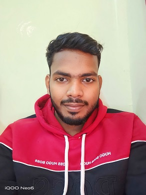

PIXPASSVISA01 / WEB PRODUCTCONCEPT VISUAL / PHOTO PREPARATION
YOUR NEXT CHAPTERThe world
The world
is waiting.
READY FOR YOUR NEXT MOVE
35 × 45 mm ✓
01 — HELLO WORLD I’m Abhishek Singh
From the first pixel to the last query.
I turn ambitious ideas into web experiences
that feel as good as they work.

Curiosity in every line.
Craft in every detail.
01 SELECTED WORK
Three projects.
Three different corners of the web.
There’s more behind the pixels.Explore my repositories, experiments, and code.
02 MORE THAN A TECH STACK
I like the moment when an idea stops being a “what if” and starts working in someone’s browser.
I’m a full stack web developer working with PHP, Laravel, MySQL, and JavaScript. I enjoy connecting the details people see with the systems they don’t — from responsive interfaces to the application logic underneath.
Right now, I’m going deeper into Laravel, GitHub workflows, and system architecture. I’m also open to collaborating on PHP and Laravel open-source projects.
Understand the experience.
Make the details work.
Keep making it better.
03 THE BUILD SYSTEM
Pick a layer.
See how I think about the build.
~ explore --layer backend
My core development focus: connect application logic with well-organized data and useful web workflows.
// A mindset, expressed as code.
const focus = {
clarity: true,
maintainability: true,
curiosity: Infinity
};~ explore --layer frontend
Responsive layouts, clear navigation, and thoughtful interactions that make the next step easy to find.
// Start with the person using it.
const experience = {
responsive: true,
accessible: true,
details: 'considered'
};~ explore --layer workflow
Version control, design exploration, and development environments that support a clearer path from idea to delivery.
// Keep learning. Keep improving.
const workflow = [
'explore', 'design',
'build', 'review',
'iterate'
];04 NEXT CHAPTER
OPEN TO IDEAS & COLLABORATIONA web project. An open-source collaboration.
Or just a conversation about what’s possible.